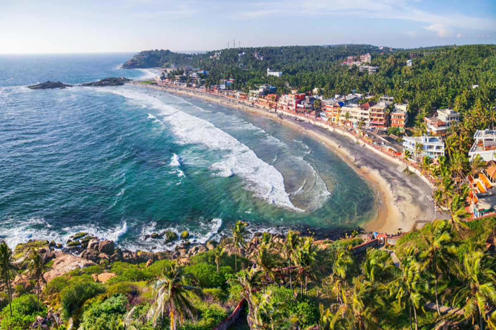
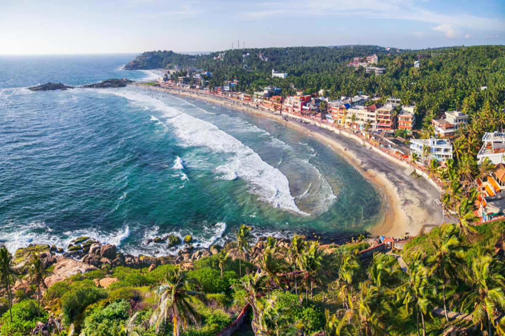

Kerala, aptly named “God’s Own Country,” is a tropical paradise in southwestern India. With serene backwaters, lush hill stations, and pristine beaches, it offers a diverse and enchanting travel experience. Explore historic Kochi, cruise the tranquil backwaters of Alleppey, and unwind amidst the misty tea plantations of Munnar. Indulge in Ayurvedic treatments, savor delectable cuisine, and witness vibrant cultural performances. From sun-kissed beaches to mist-clad mountains, Kerala captivates with its natural beauty and rich heritage, promising an unforgettable journey for every traveler.
Tour Schedule
Day 01 Arrive Kochi
Upon arrival, after clearing immigration and custom, you will be met and transferred to your hotel.
Overnight at hotel
Day 02 Kochi
Following breakfast tour of Cochin City: With its wealth of historical associations, and its magnificent setting on a cluster of islands and narrow peninsulas,
Cochin is one of the most fascinating cities of coastal South India. It is a city with indelible marks of Christianity, Islam, Hinduism and Jewish traditions.
Of Special mention is the older parts of the Fort Cochin area.
It more or less exists as it used to be a 1000-year behind our times.
This part of the city reflects an unusual blend of medieval Portugal, Dutch and English country life grafted on to the tropical Malabar Coast.
The 16th century Mattancherry Palace, also known as the Dutch Palace is a fascinating fort with elegant buildings and interesting collections
from the Royal traditions of the region.
The unique feature of Cochin is the unexpected and isolated Jewish community,
whose origins date back to AD 52.
They are self-contained and have their own Synagogue.
The area around the Synagogue, known as ‘Jew Town’ is one of the main centres of spice trade.
Scores of small firms huddle together in old dilapidated buildings and the air is filled with the aroma of ginger,
cardamom, cumin, turmeric and cloves. The area is very busy.
(Synagogue closed on Fridays & Saturdays)
Overnight at hotel
Day 03 Kochi / Munnar (140kms / 3 hrs.30mins approx)
Following breakfast, drive to Munnar
Upon arrival, check in to your hotel.
Afternoon free at leisure
Overnight at hotel
Day 04 Munnar
Following breakfast, visit Munnar, which is surrounded by 30 tea gardens, the atmosphere is fragrant with extensive tea and cardamom plantations.
Tea estates are situated mostly on the inner slopes of an elevated basin-like plateau. Estate elevations vary from about 1220 m to over 1830 m. some of the tea plantations, at an elevation of over 2135-m, are among the highest in the world. It would be worthwhile to visit some of these tea gardens to witness the plucking of leaves by women who carry conical bamboo baskets on their back and strapped to their forehead by a cloth band. The work on the field is all done by hand and is a fascinating sight. You may also visit the nearby Lockhart Gap, which provides a panoramic view of the valley and plantation down below. The enchanting high range of lakes and streams, the low-flying clouds and the mist-filled valleys cast a magical spell, which lingers long in the memory.
We would also be visiting the natural habitat of Nilgiri Tahr, a rare mountain goat and the Eravikulam National Park (Subject to open)
Overnight at hotel
Day 05 Munnar / Periyar (160kms / 4hrs approx)
Following breakfast, drive to Periyar
Upon arrival, check in to your hotel.
Afternoon , proceed for Nature walk, Different nature trails traversing diverse habitats form the trekking routes, This is an interpretive programme offering excellent opportunity to watch birds, butterflies and other wildlife. The trails often pass through evergreen and moist deciduous forests interspersed with marshy grasslands. The Nature walk is the right programme to feel nature, hear her whispers and smell her flowers.
Overnight at hotel
Day 06 Periyar / Kumarakom (140kms / 4hrs approx)
Following breakfast, drive to Kumarakom
Upon arrival, check in to your hotel.
Optional: Afternoon, board Backwater Cruise (02 Hrs): Kerala Backwaters offers to take you on an exciting backwater cruise to Kumarakom in Kerala.
A backwater cruise is the perfect way to enjoy your holidays to Kerala, as you can laze in the sun,
go boating on the lovely Kerala backwaters or enjoy fishing on the tranquil waters.
Backwater cruises on the traditional Kerala kettuvalloms on the glittering Kerala backwaters.
Kumarakom was but a traditional Kerala fishing village that was later developed into the perfect holiday destination.
In fact a lot of tourists visit this perfectly picturesque region with its natural greenery and relaxed atmosphere.
In fact when you are on a leisure cruise on one of these backwaters you come in close contact with the way of life in the rice bowl of Kerala,
India i.e. the Kuttanad region.
The reflections of the crooked palm trees on the calm backwaters create a dream vision for you during your backwater cruise to Kerala.
Overnight at hotel
Day 07 Kumarakom / House Boat
Following leisurely breakfast board the Houseboat (at 1200Noon) for a unique experience through the narrow canals and channels of the backwaters of Kerala. The material that go into the making of houseboat are all local and Eco-friendly; bamboo poles, coconut fiber ropes, bamboo mats car pets etc. The main wood used is “Anjali “. The Houseboat provides all comforts – Beds, a kitchen and western toilets. Traditional lanterns are used as lights. The cuisine is of traditional Kerala flavour along with the local Specialties – delicious fish and prawns. Cruising on a boat through remote tribal villages along the tranquil backwaters of Kerala is a superb experience. We explore the backwaters in your Houseboat .Sensational in its own silent way, the cruise takes you along snake boat docks, friendly cheering villagers, coir (Jute) making communities, toddy (local spirit) shops, fishing nets pitched for the day’s catch, bunded paddy fields and manual canoes of different sizes criss-crossing each other. The experience enables you to reach beautiful untouched areas
Overnight: House Boat
Day 08 House Boat / Alleppey (Home Stay)
Following breakfast, disembark at Alleppey and check in to Home Stay
In the beautiful waterways and backwater of the Kuttanad region of Central Kerala lies Emerald Isle, an exotic haven of tranquilly, seemingly remote from city life, yet barely 10 kilometers from Alleppey Town. Tucked away on this delightful island lies the Emerald Isle Heritage Villa, an ancestral Country House set in 9 acres of secluded grounds – your Retreat into a Paradise of Peace. Emerald Isle Heritage Home is situated in an island resplendent with exotic flora, breathtaking flowers, myriad birds and butterflies to make for a memorable holiday, affordable and unforgettable. A truly wonderful way to spend your time on the banks of the backwaters of Kerala!
Full day free at leisure
Overnight at hotel
Day 09 Alleppey (Home Stay) / Kovalam (180Kms / 04hrs approx)
Following breakfast, drive to Kovalam
Upon arrival, check in to your hotel
Rest of the day free for independent / beach activities
Overnight at hotel
Day 10 Kovalam
Day free for independent / beach activities
Overnight at hotel
Day 11 Kovalam / Trivandrum (16Kms / 30 min approx)
Depart Trivandrum
Morning transfer to Trivandrum international airport for your flight back home.


 
